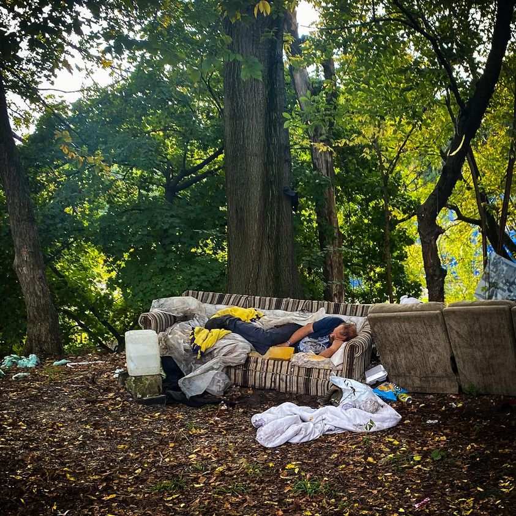

Timeline photos
This is Hurricane (yes, the highly regarded guitarist).
I took this photo on Friday morning. It had rained all night long. That couch is soaking wet.
There is a largely unspoken belief in the government and propagated by the institutional homeless service providers that helping feed and shelter and provide harm reduction supplies to these people is enabling them. If we’d just stop helping them they would finally come crawling through the front door of The System begging for help.
Hurricane had a structure with a tarp over it. Someone took his tarp. He then pulled this wet, rotting couch out of the trash and slept on it. When the city comes for his couch he will sleep on the dirt. They would take the dirt if they just could figure out how.
Humanitarian compassion aside, this man is not crawling through the system’s door. Maybe he’s been burnt by them too many times. Maybe he doesn’t want to leave his friends. Maybe he is too anxious to try something new. Maybe he’s too proud. Maybe he doesn’t believe in taking government help. But one thing is for sure: he is not going to beg for help by the government.
Place: Akron, Ohio (41.0732, -81.5179)
Address: Akron, OH 44301